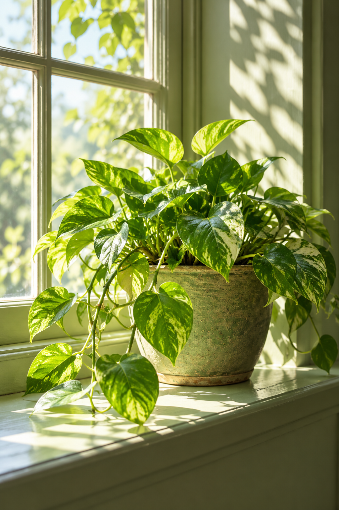

Learn to listen to your leaves
Simple signs that help you understand what your plants need.
A journal for the naturally curious
Thoughtful stories for greener spaces and slower days.
Explore the journal
A little room to growFrom the journal
Simple signs that help you understand what your plants need.
Make a small corner feel like a place to pause.
A practical introduction to the ground beneath it all.